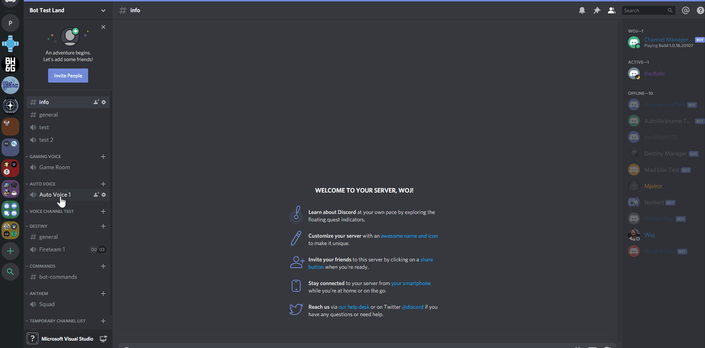
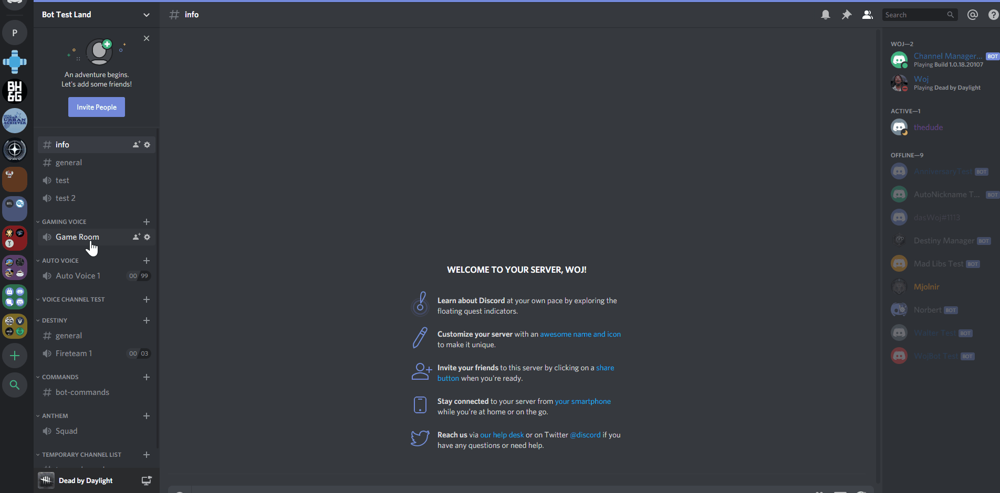

Channel Manager Discord Bot¶
Overview¶
The Channel Manager Bot is a bot that manages voice channels in Discord servers. It helps to prevent large lists of voice channels in a servers’ channel list by automatically creating channels when none is available, and removing channels when they are not needed. In addition, the Channel Manager Bot can create “Game Rooms,” which base the channel name on the game that the users in the channel are playing, and allow members of the server to create their own custom voice channels.
Auto Voice Groups¶
Auto Voice Groups allow server managers to keep their voice channel lists clear of clutter. When you set up a Voice Channel Group, the Channel Manager Bot creates the initial channel. When users join the channel a new one is created, and when they leave it is removed.
{kind=link}
Game Rooms¶
Game Rooms are channels that are tailored to the type of game that a user is playing. The voice channel gets renamed based on what the majority of players are playing in the channel. Like Auto Voice Groups, new channels are created when a user joins a Game Room so that there is always a free channel.
{kind=link}
{kind=link}